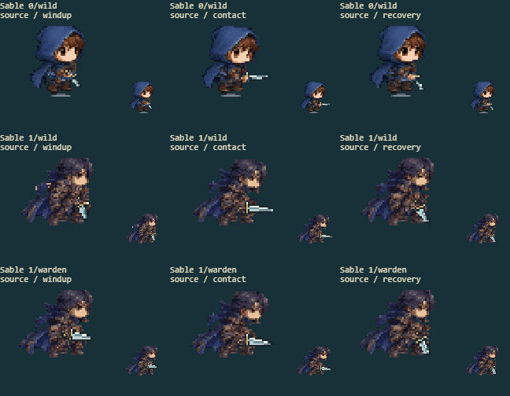
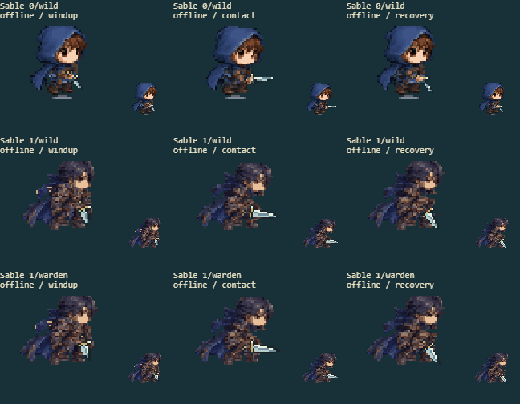

6 separate source/offline fights, covering every available form and path. The right panels show the actual cached sprite drawn in battle, before the hit-flash overlay, at native size and enlarged. The arena panel retains combat effects.
Full delivered-game screenshot · Contact inspection
| Factor | Result | Observed |
|---|---|---|
| Arm ownership | pass | Visible gloves move once; concealed rear arms use original indexed skin under an intact cloak rather than cutting blue arm shapes out of it. |
| Torso continuity | pass | The jacket remains filled under raised arms, and rear cloak pixels remain present beneath the moving concealed hands. |
| Grip contact | pass | The blade stays on its fixed source hand; the west near-hand carry no longer crosses the chest. |
| Sprite completeness | pass | Blue hood/cape and evolved costume detail remain complete in source and offline renders, including rear views. |
| Motion and cell bounds | pass | The slender original sleeves remain connected through travel, attacks and get-up; concealed hands emerge through depth without leaving holes in the cloak. |


Original/current anatomy in all eight facings: authored form 0 · authored form 1 · authored form 2